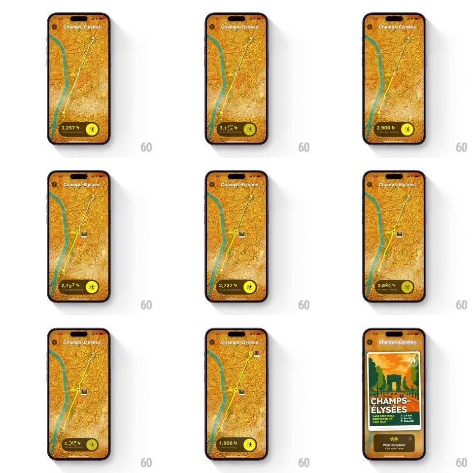

Media
Frame-by-frame

Rebuild this interaction 1:1: Walk the World's walk-complete recap - the Champs-Elysees map draws the walked route while the step pill ticks down, photo markers pop along the path, then a tilted travel-poster share card springs in over the blurred map with a "Walk Complete!" pill below.

Rebuild this interaction 1:1: Walk the World's walk-complete recap - the Champs-Elysees map draws the walked route while the step pill ticks down, photo markers pop along the path, then a tilted travel-poster share card springs in over the blurred map with a "Walk Complete!" pill below.
## Integration
Integration: stack-agnostic spec - springs given as stiffness/damping, timed motions as duration + curve; map every value to your framework and animation library of choice.
## Scene
Full-screen orange street map of Paris (Champs-Elysees): a white route line with waypoint dots, photo thumbnails pinned along it, a dark step pill bottom-left, a yellow walker button bottom-right. End state: an illustrated poster card ("CHAMPS-ELYSEES", "3,400 STEP WALK / COMPLETED ON 12 SEP 2025 / FRANCE") tilted over the blurred map, a "Walk Complete!" pill with a share button at the bottom.
## Motion spec
Pattern: route replay into share-card reveal, ~2.4s.
- Replay: the route draws from start to finish (1.4s) while the step pill ticks down in sync; photo markers pop in (spring ~420/18) as the head passes.
- Blur: at 100% the map blurs (0 -> 12px, 300ms) and darkens slightly.
- Card: the poster card springs in from below with rotation (0 -> -6deg settle, scale 0.7 -> 1, spring ~320/17, 500ms) - visible overshoot on both.
- Pill: "Walk Complete!" and the share button slide up (250ms, 80ms stagger) after the card lands.
## Calibration
- The poster is an illustration, not the map - it carries its own artwork and colors.
- The card keeps its tilt; the pill stays level.
## Reduced motion
The map fades blurred and the card fades in upright (300ms); no route replay.
## Don't miss
- The tilt plus overshoot gives the card its sticker-slap feel - do not land it flat and slow.
- The step pill finishes at its final value before the card enters.